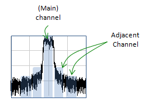
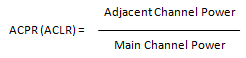
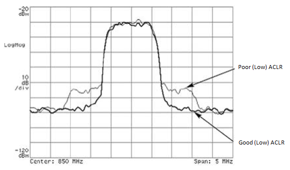

|
RF - ACPR vs ACLR Home : www.sharetechnote.com |
|
ACPR stands for Adjacent Channel Power Ratio and ACLR stands for Adjacent Channel Leakage Ratio. The definition is simple. It is the ratio of power between the main channel and those channels around the main channel as shown below.


The less ACAR/ACPR you have, the better it is. Following plot shows two examples showing one good and one poor ACLR/ACPR.

As I mentioned above, the definition is simple. More important thing would be why the high ACPR/ACLR is bad and what causes these problems.
Why poor ACLR/ACPR is bad ? : There would be two main reason. The biggest reason would be that the poor ACPR/ACLR means you have higher unexpected (unwanted) power next to the main channel. What if another communication system is using that adjacent area as a main channel ? In this case, the high adjacent channel power of one communication system become the high interference to another communication system. There can be another reason. High ACPR/ACLR means that some energy that is supposed to be in main channel spilled over to adjacent channels. It means that the useful energy get lost in useless form and it reduces the efficiency of transmission.
What causes the poor ACLR/ACPR ? : There can be several factors that would eventually lead to poor ACLR/ACPR. The biggest factor would be non-linearity of power amplifier. (This is why they put a lot of effort to reduce the non-linear effect of a power amplifier).
|